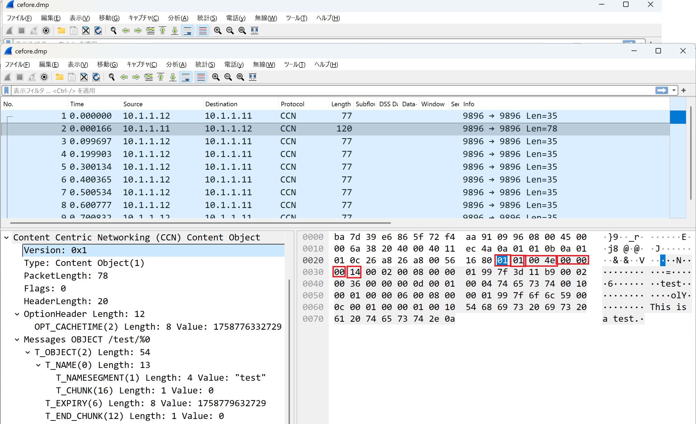
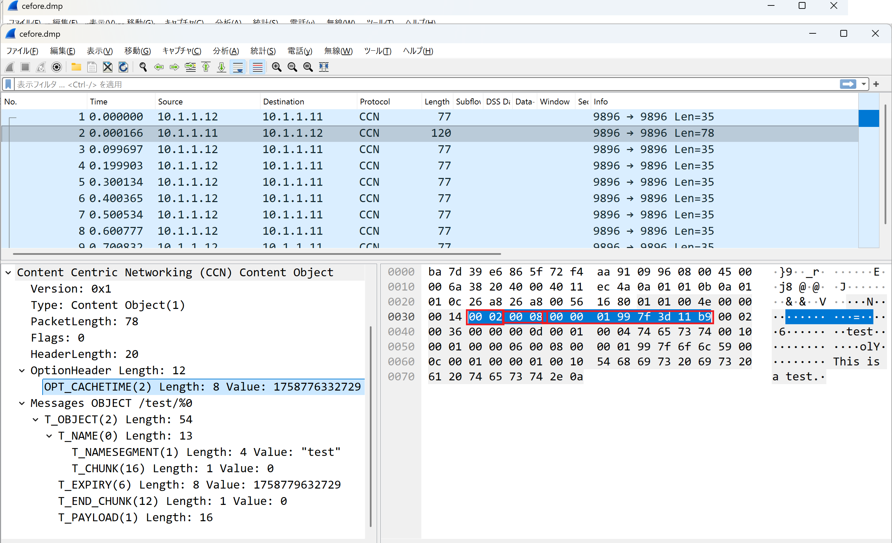
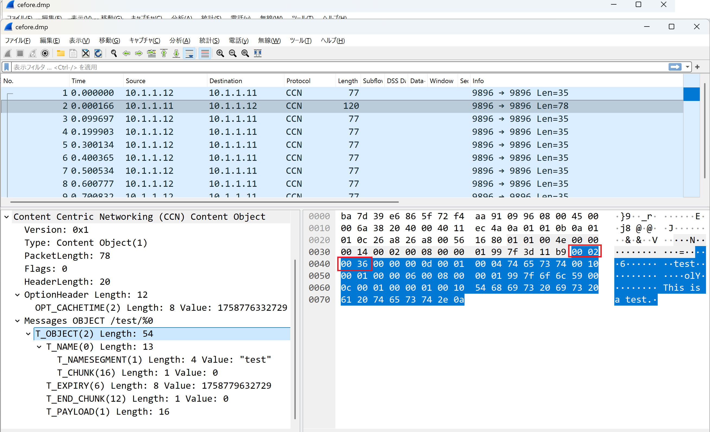
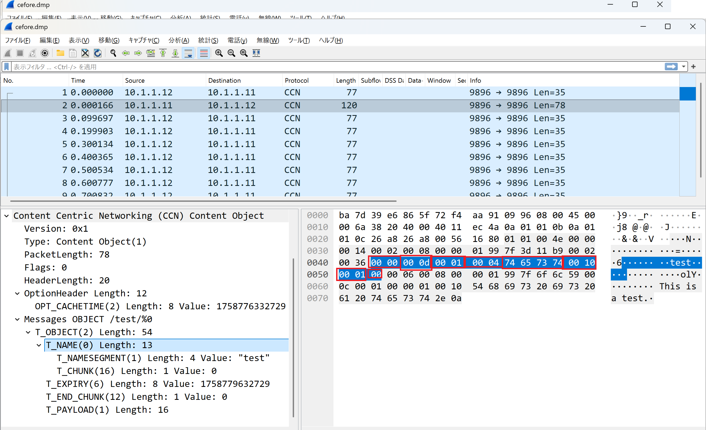
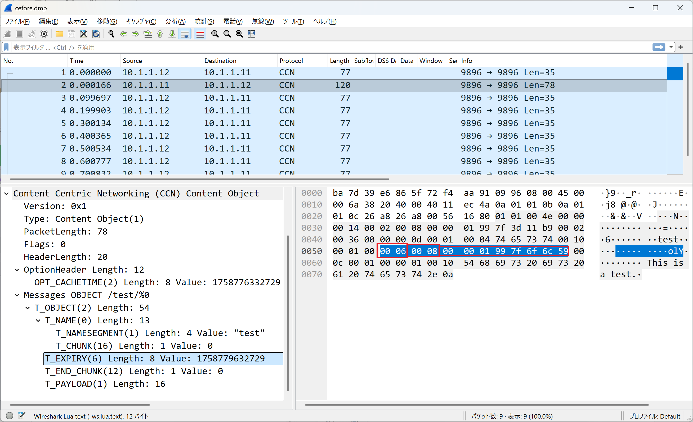
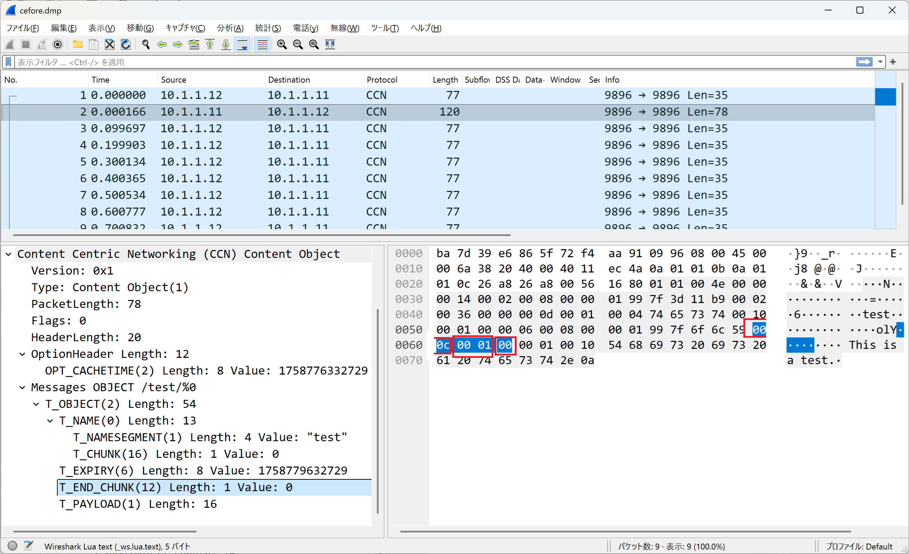
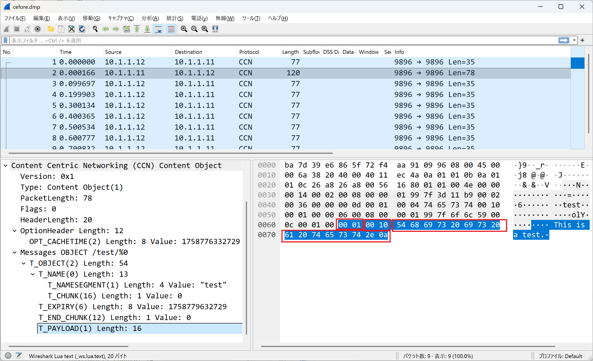

はじめに
こちらの（その3）では、Interestに対して返ってくるContent Objectを観察してみます。

Fixed Headerの解析
Fixed headerについてはinterestと似た形なので、以下と対応を取ることで、それぞれの値の意味がわかります。
- Version = 1
- Packet Type = PT_CONTENT (1)
- PacketLength = 78 (4*16 + 14 = 78)
- Reserved = 0
- Flags = 0
- HeaderLength = 20
Fixed Header Format
1 2 3
0 1 2 3 4 5 6 7 8 9 0 1 2 3 4 5 6 7 8 9 0 1 2 3 4 5 6 7 8 9 0 1
+---------------+---------------+---------------+---------------+
| Version | PT_CONTENT | PacketLength |
+---------------+---------------+---------------+---------------+
| Reserved | Flags | HeaderLength |
+---------------+---------------+---------------+---------------+
ヘッダ長が20バイトなので、12バイトのオプションヘッダが続いていることがわかります。
Option Headerの解析
このHop-by-Hop TLV headersについては以下のように読むことができます。

- Type: T_CACHETIME (2)
- Length: 8 （固定）
- Value: 1758776332729 (2025/9/25 13:58:52.729 JST)
Cache Time Header Format
1 2 3
0 1 2 3 4 5 6 7 8 9 0 1 2 3 4 5 6 7 8 9 0 1 2 3 4 5 6 7 8 9 0 1
+---------------+---------------+---------------+---------------+
| T_CACHETIME | 8 |
+---------------+---------------+---------------+---------------+
/ /
/ Recommended Cache Time /
/ /
+---------------+---------------+---------------+---------------+
Message TLVの解析

次に来るのがContent ObjectのMessage TLVになります。
- MessageType = T_OBJECT (2)
- MessageLength = 54
Message TLV Format
1 2 3
0 1 2 3 4 5 6 7 8 9 0 1 2 3 4 5 6 7 8 9 0 1 2 3 4 5 6 7 8 9 0 1
+---------------+---------------+---------------+---------------+
| MessageType | MessageLength |
+---------------+---------------+---------------+---------------+
| Name TLV |
+---------------+---------------+---------------+---------------+
/ Optional PayloadType TLV /
+---------------------------------------------------------------+
/ Optional ExpiryTime TLV /
+---------------------------------------------------------------+
Name TLVの解析

次に名前を示すName TLVが来ます。interestで要求された名前を返しているので、全く同じデータになります。
- Type = T_NAME (0)
- Length = 13
- Type = T_NAME_SEGMENT (1)
- Length = 4
- Value = "test" (74 65 73 74)
- Type = T_CHUNK (16)
- Length = 1
- Number = 0
ExpiryTime TLVの解析

次に来るのが Optional ExpiryTime TLVで、値は以下のように解釈できます。
- Type = T_EXPIRY (6)
- Length = 8
- Value = 1758779632729 (2025/9/25 14:53:52.729 JST)
EndChunkNumberの解析

また続くEndChunkNumberもinternet draftに記載されているものです。下の図と照合することで、次の値であることがわかります。
- Type = T_ENDCHUNK (12)
- Length = 1
- Value = 0
これで最終チャンクが0番であり、全体のパケット数が1となり、チャンク番号が0番であるこのパケットが最終であることがわかります。
End Chunk Number Format
1 2 3
0 1 2 3 4 5 6 7 8 9 0 1 2 3 4 5 6 7 8 9 0 1 2 3 4 5 6 7 8 9 0 1
+---------------+---------------+---------------+--------------+
| T_ENDCHUNK | Length |
+---------------+---------------+---------------+--------------+
| variable length integer /
+---------------+---------------+
Payloadの解析

最後にペイロードとしてファイルデータが入っています。以下のように解釈できます。
- Type = T_PAYLOAD (1)
- Length = 16
- Value = "This is a test.\n" (16バイト)
Payload Format
1 2 3
0 1 2 3 4 5 6 7 8 9 0 1 2 3 4 5 6 7 8 9 0 1 2 3 4 5 6 7 8 9 0 1
+---------------+---------------+---------------+---------------+
| T_PAYLOAD | Length |
+---------------+---------------+---------------+---------------+
/ Payload Contents /
+---------------+---------------+---------------+---------------+
まとめ
ここまででContent Objectパケットの中身をみてきました。